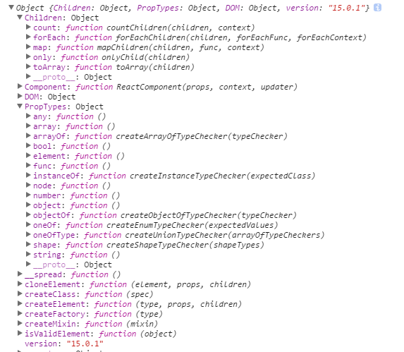

编者按：除组件化、虚拟DOM在复用以及性能上带来的一般好处外，React思想使得开发者之间更好的分工与合作，在配合上非常顺畅，规范的接口以及极强的约束，使得整个代码结构清晰，不同开发者的代码高度一致。
本次课程示例代码请前往react-tutorial。 示例中采用ES6语法来写React组件代码，提前明确以下几点：
getInitialState 在设置组件初始的 state ，可在组件的 constructor 中通过 this.state 设置，也可直接作为 properties 定义propTypes、defaultProps 作为 properties 定义，也可在组件外部通过键值对方式设置。mixins，可以使用高阶组件写法，或者 decorator。最简单的React组件及其渲染
import React, { Component } from 'react';
/**
* 最简单的一个组件
*/
class SimpleComponent extends Component {
render(){
return <div> here we go </div>;
}
}
// 我们可以看看React给我们提供了哪些顶层组件
console.log( React );
export default SimpleComponent;
React.Children: Object
React.Component: ReactComponent(props, context, updater)
React.DOM: Object
React.PropTypes: Object
React.cloneElement: (element, props, children)
React.createClass: (spec)
React.createElement: (type, props, children)
React.createFactory: (type)
React.createMixin: (mixin)
React.isValidElement: (object)

Component API
this.context: Object
this.props: Object
this.refs: Object
this.state: Object
this.setState: Object
ReactDOM.findDOMNode: findDOMNode(componentOrElement)
ReactDOM.render: ()
ReactDOM.unmountComponentAtNode: (container)
ReactDOMServer.renderToString
ReactDOMServer.renderToStaticMarkup
类似 xml 的语法，用来描述组件树
<div classname="x">
<a href="#">#</a>
<component x="y">1</component>
</div>
不用JSX，用React提供的API写的话
React.createElement('div',{
className:'x'
},[
React.createElement('a',{href:'#'},'#'),
React.createElement(Component,{x:'y'},1);
]);
import React, { Component } from 'react';
// 1. 组件命名遵循驼峰命名，首字母大写
class ComponentDemo extends Component {
render(){
{
/*
2. 这是代码注释
也可以是多行
*/
}
const name = this.props.name;
// 3. render 方法 return 回来的根元素只能是一个，超过会报错
// 4. { } 里面可以写JS代码
return (
<div>
hello, {name ? name : "我是默认的"}
</div>
);
}
}
export default ComponentDemo;
import React, { Component } from 'react';
class StyleDemo extends Component {
render(){
// 5. 在JS文件里面给组件定义样式
var MyComponentStyles = {
color: 'blue',
fontSize: '28px'
};
return (
<div style={MyComponentStyles}>
可以直接这样写行内样式
</div>
)
}
}
export default StyleDemo;
可以用通过 {...obj} 来批量设置一个对象的键值对到组件的属性，注意顺序
import React, { Component } from 'react';
class SpreadDemo extends Component {
componentWillMount(){
console.log(this.props);
}
render(){
return <h1> {this.props.name} is a {this.props.type} </h1>;
}
}
export default SpreadDemo;
例如：className, readOnly, htmlfor
用状态控制组件变化 可以把一个组件看做一个状态机, 每一次状态对应于组件的一个 ui
组件内部的状态，可以使用 state
import React, { Component } from 'react';
class StateDemo extends Component {
state = {
secondsElapsed: 0
}
tick(){
this.setState({ secondsElapsed: this.state.secondsElapsed + 1 });
}
componentDidMount(){
this.interval = setInterval( this.tick.bind(this), 1000 );
}
componentWillUnmount(){
clearInterval(this.interval);
}
render(){
return (
<div>目前已经计时：{this.state.secondsElapsed}秒</div>
)
}
}
export default StateDemo;
通过 this.props 可以获取传递给该组件的属性值，还可以通过定义 getDefaultProps 来指定默认属性值（这是ES5的写法，ES6定义组件的默认props可以直接写props）
下面几个是props的常用API：
this.props.childrenthis.props.mapthis.props.filterprops是调用组件的时候传递进去的数据，一般用于组件树数据传递
import React, { Component } from 'react';
class PropsDemo extends Component {
props = {
title: '这是默认的title属性值'
}
render(){
console.log(this.props);
return <b>{this.props.title}</b>
}
}
export default PropsDemo;
// 组件调用方式
// <PropsDemo title="设置的标题" />
通过指定 propTypes 可以校验props属性值的类型，校验可提升开发者体验，用于约定统一的接口规范。
import React, { Component, PropTypes } from 'react';
class PropTypesDemo extends Component {
static propTypes = {
title: PropTypes.string.isRequired
}
props = {
title: '默认的title'
}
render(){
return <b>{this.props.title}</b>
}
}
export default PropTypesDemo;
用 React.createClass或者React.Component 定义组件时允许传入相应的配置及组件API的使用，包括组件生命周期提供的一系列钩子函数。
import React, { Component } from 'react';
class LifeCycle extends Component {
Props = {
value: '开始渲染'
}
componentWillReceiveProps(nextProps){
console.log('componentWillReceiveProps');
this.setState({
value: nextProps.value
});
}
shouldComponentUpdate(nextProps,nextState){
console.log('shouldComponentUpdate');
return true;
}
componentWillUpdate(nextProps,nextState){
console.log('componentWillUpdate');
}
componentWillMount(){
console.log('componentWillMount');
}
render() {
console.log('render');
return <span>{this.props.value}</span>
}
componentDidMount() {
console.log('componentDidMount');
}
componentDidUpdate(prevProps,prevState) {
console.log('componentDidUpdate');
}
componentWillUnmount(prevProps,prevState) {
console.log('componentWillUnmount');
}
}
export default LifeCycle;
调用组件并销毁组件示例
import React, { Component } from 'react';
import LifeCycleDemo from './LifeCycleDemo';
class DestroyComponent extends Component {
state = {
value:1,
destroyed:false
}
increase = () => {
this.setState({
value: this.state.value + 1
});
}
destroy = () => {
this.setState({
destroyed: true
});
}
render() {
if(this.state.destroyed){
return null;
}
return <div>
<p>
<button onClick={this.increase}>每次加1</button>
<button onClick={this.destroy}>干掉这两个按钮</button>
</p>
<LifeCycleDemo value={this.state.value}/>
</div>;
}
}
export default DestroyComponent;
# 创建-》渲染-》销毁
getDefaultProps()
getInitialState()
componentWillMount()
render()
componentDidMount()
componentWillUnmount()
# 更新组件
componentWillReceiveProps()
shouldComponentUpdate()
componentWillUpdate()
render()
componentDidUpdate()
获取DOM后可以方便结合现有非 react 类库的使用，通过 ref/refs 可以取得组件实例，进而取得原生节点，不过尽量通过 state/props 更新组件，不要使用该功能去更新组件的DOM。
import React, { Component } from 'react';
import ReactDOM, { findDOMNode } from 'react-dom';
class HandleDOMComponent extends Component {
componentDidMount(){
// 两种方式都可以获取到元素
let ele = findDOMNode(this.refs.content);
let ele2 = this.refs.content;
// 如果想用 jquery，那么这是个好时机
console.log( ele );
console.log( ele.innerHTML );
console.log( ele2.innerHTML );
}
render(){
return (
<div>
<h3>来吧，一起操作DOM</h3>
<div ref='content'>这是我DOM元素里面的内容</div>
</div>
);
}
}
export default HandleDOMComponent;
再看一个有趣的例子
import React, { Component } from 'react';
import { findDOMNode } from 'react-dom';
class Refs extends Component {
state = {
red: 0,
green: 0,
pink: 0
}
update = (e) => {
this.setState({
red: findDOMNode(this.refs.red).value,
green: findDOMNode(this.refs.green).value,
pink: findDOMNode(this.refs.pink).value
})
}
render(){
return (
<div>
<Slider ref="red" update={this.update} />
{this.state.red}
<br />
<Slider ref="green" update={this.update} />
{this.state.green}
<br />
<Slider ref="pink" update={this.update} />
{this.state.pink}
</div>
)
}
}
class Slider extends Component {
render(){
return (
<input type="range"
min="0"
max="255"
onChange={this.props.update} />
)
}
}
export default Refs;
可以通过设置原生 dom 组件的 onEventType 属性来监听 dom 事件，例如 onClick, onMouseDown，在加强组件内聚性的同时，避免了传统 html 的全局变量污染
'use strict';
import React, { Component } from 'react';
class HandleEvent extends Component {
state = { liked: false }
handleClick = (event) => {
this.setState({liked: !this.state.liked});
}
render() {
let text = this.state.liked ? '喜欢' : '不喜欢';
return (
<p onClick={this.handleClick}>
我 {text} 你.
</p>
);
}
}
export default HandleEvent;
注意：事件回调函数参数为标准化的事件对象，可以不用考虑 IE
更多事件我们可以一起看这里
受限组件示例：
render() {
return <input type="text" value="Hello!" />;
}
非受限组件示例：
render() {
return <input type="text" />;
}
'use strict';
import React, { Component } from 'react';
class ComponentA extends Component {
render() {
return <a href='#'>我是组件A<br/></a>
}
}
class ComponentB extends Component {
render() {
return <a href='#'>我是组件B</a>
}
}
class SelfCreateComponent extends Component {
render() {
return (
<i>
<ComponentA />
<ComponentB />
</i>
);
}
}
export default SelfCreateComponent;
自定义组件中可以通过 this.props.children 访问自定义组件的子节点
'use strict';
import React, { Component } from 'react';
// 定义一个组件，通过React.Children 拿到组件里面的子元素
class ListComponent extends Component {
render(){
return <ul>
{
React.Children.map( this.props.children, function(c){
return <li>{c}</li>;
})
}
</ul>
}
}
class UseChildrenComponent extends Component {
render(){
return (
<ListComponent>
<a href="#">Facebook</a>
<a href="#">Google</a>
<a href="#">SpaceX</a>
</ListComponent>
)
}
}
export default UseChildrenComponent;
<textarea name="description" value="This is a description." />
<select multiple={true} value={['B', 'C']}>
<option value="A">Apple</option>
<option value="B">Banana</option>
<option value="C">Cranberry</option>
</select>
1.定义复选框组件Checkboxes
import React, { Component } from 'react';
class Checkboxes extends Component {
render(){
return <span>
A
<input onChange={this.props.handleCheck} name="goodCheckbox" type="checkbox" value="A"/>
B
<input onChange={this.props.handleCheck} name="goodCheckbox" type="checkbox" value="B" />
C
<input onChange={this.props.handleCheck} name="goodCheckbox" type="checkbox" value="C" />
</span>
}
}
export default Checkboxes;
2.定义单选框按钮组RadioButtons
import React, { Component } from 'react';
class RadioButtons extends Component {
saySomething(){
alert("我是一个很棒的单选框按钮组");
}
render(){
return <span>
A
<input onChange={this.props.handleRadio} name="goodRadio" type="radio" value="A"/>
B
<input onChange={this.props.handleRadio} name="goodRadio" type="radio" defaultChecked value="B"/>
C
<input onChange={this.props.handleRadio} name="goodRadio" type="radio" value="C"/>
</span>
}
}
export default RadioButtons;
3.FormApp组件集成两个组件并处理表单逻辑
'use strict';
import React, { Component } from 'react';
import Checkboxes from './Checkboxes';
import RadioButtons from './RadioButtons';
class FormApp extends Component {
state = {
inputValue: '请输入...',
selectValue: 'A',
radioValue:'B',
checkValues:[],
textareaValue:'请输入...'
}
handleSubmit = (e) => {
e.preventDefault();
let formData = {
input: this.refs.goodInput.value,
select: this.refs.goodSelect.value,
textarea: this.refs.goodTextarea.value,
radio: this.state.radioValue,
check: this.state.checkValues,
}
alert('您即将提交表单')
console.log('你提交的数据是:')
console.log(formData);
}
handleRadio = (e) => {
this.setState({
radioValue: e.target.value,
})
}
handleCheck = (e) => {
let checkValues = this.state.checkValues.slice();
let newVal = e.target.value;
let index = checkValues.indexOf(newVal);
if( index == -1 ){
checkValues.push( newVal )
}else{
checkValues.splice(index,1);
}
this.setState({
checkValues: checkValues,
})
}
render(){
return <form onSubmit={this.handleSubmit}>
<h3> 请输入内容 </h3>
<input ref="goodInput" type="text" defaultValue={this.state.inputValue }/>
<br/>
<h3> 请选择 </h3>
<select defaultValue={ this.state.selectValue } ref="goodSelect">
<option value="A">A</option>
<option value="B">B</option>
<option value="C">C</option>
<option value="D">D</option>
<option value="E">E</option>
</select>
<br/>
<h3> 单项选择 </h3>
<RadioButtons ref="goodRadio" handleRadio={this.handleRadio} />
<br/>
<h3> 多选按钮 </h3>
<Checkboxes handleCheck={this.handleCheck} />
<br/>
<h3> 反馈建议 </h3>
<textarea defaultValue={this.state.textareaValue} ref="goodTextarea"></textarea>
<br/>
<button type="submit">确认提交</button>
</form>
}
}
export default FormApp;
mixin 是一个普通对象，通过 mixin 可以在不同组件间共享代码，使你的React程序变得更为可重用。
注意，ES6语法不支持mixin写法，而是可以通过decorator去实现代码共享，这里使用ES5语法做示例说明。
import React from 'react';
var SetIntervalMixin = {
componentWillMount: function() {
this.intervals = [];
},
setInterval: function() {
this.intervals.push(setInterval.apply(null, arguments));
},
componentWillUnmount: function() {
this.intervals.forEach(clearInterval);
}
};
var MixinDemo = React.createClass({
// Use the mixin
mixins: [SetIntervalMixin],
getInitialState: function() {
return {seconds: 0};
},
componentDidMount: function() {
// Call a method on the mixin
this.setInterval(this.tick, 1000);
},
tick: function() {
this.setState({seconds: this.state.seconds + 1});
},
render: function() {
return (
<p>
计时器已经运行了： {this.state.seconds} 秒.
</p>
);
}
});
export default MixinDemo;
那么，接下来，我们用high-order component的方式来实现mixin：
import React, { Component } from 'react';
let Mixin = MixinComponent => class extends Component {
constructor() {
super();
this.state = { val: 0 };
this.update = this.update.bind(this);
}
update(){
this.setState({val: this.state.val + 1});
}
componentWillMount(){
console.log('will mount...')
}
render(){
return (
<MixinComponent
update={this.update}
{...this.state}
{...this.props}
/>
)
}
componentDidMount(){
console.log('mounted...')
}
}
const Button = (props) => {
return (
<button onClick={props.update}>
{props.txt} - {props.val}
</button>
)
}
const Label = (props) => {
return (
<label onMouseMove={props.update}>
{props.txt} - {props.val}
</label>
)
}
let ButtonMixed = Mixin(Button);
let LabelMixed = Mixin(Label);
class Mixins extends Component {
render(){
return (
<div>
<ButtonMixed txt="button" />
<LabelMixed txt="label" />
</div>
)
}
}
export default Mixins;
总结起来，学习的难度不高，以上内容掌握后，基本能够进行React的开发，后续我们继续相关内容的讲解，内容预告：一步步教你如何用React写一个简单完整的应用功能。